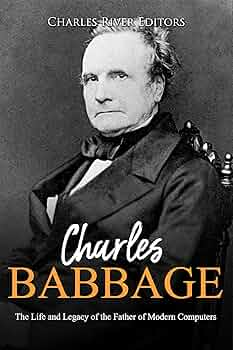
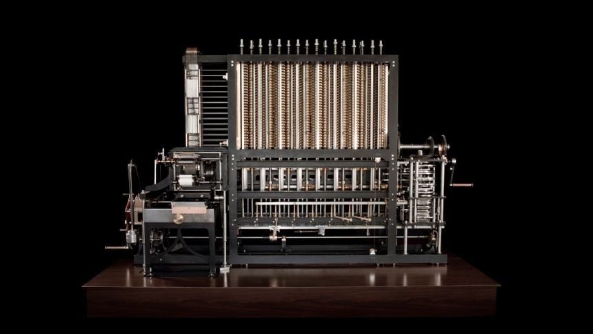
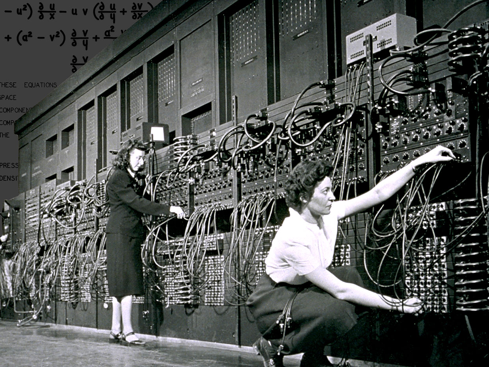
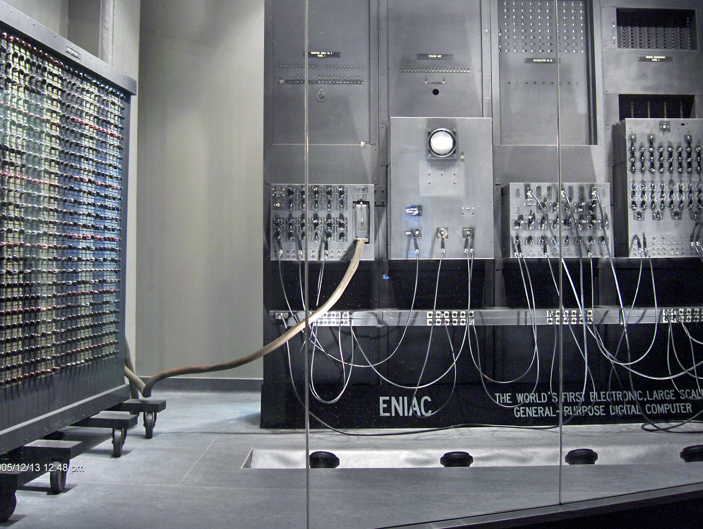

Computer science has its roots in mathematics and engineering, evolving over centuries into a discipline that shapes modern technology. The foundations of computer science date back to the 19th century with Charles Babbage’s design for the Analytical Engine, often considered the first concept of a programmable computer. In the 1930s, Alan Turing laid the theoretical groundwork with his Turing machine, which introduced the idea of computation and algorithms.
 The mid-20th century saw the development of actual computers, starting with machines like the ENIAC (1945), one of the first general-purpose electronic computers. The emergence of programming languages followed, with Fortran in the 1950s and subsequent advancements leading to modern software development.
 By the late 20th century, personal computing, the internet, and artificial intelligence revolutionized the field, making computer science an essential part of daily life. Today, advancements in fields like quantum computing and machine learning continue to push the boundaries of what computers can do.


I chose to study computer science because I am fascinated by technology and its ability to shape the future. I love solving complex problems, building innovative software, and understanding how computers work. The endless possibilities in this field excite me, and I know it offers incredible career opportunities.